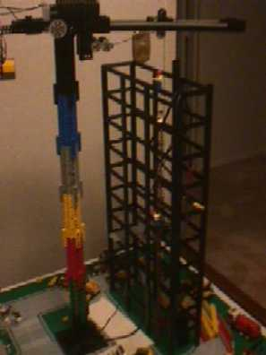
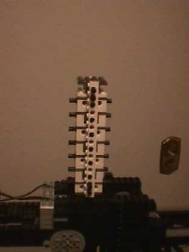
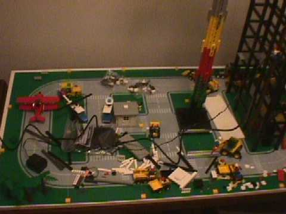

|

|
Hello this is my crane. Also Here is my skeleton of my building.
It is about a yard tall. Both the building and the crane is not completed.
Because the crane is not completed. I have the following picture
of what is missing.
It is power by remote control and MindStorm. The Best mindstorm.
Three output (motors).
One is to make 360 circle. (no limits of 360 circle)
Two is to move the crane with chains.
Moving the string away and to the crane.
Three is add or release the string. I hope that clears it up.
|
|

|
It is white and dk. gray pieces. As you could see the top
is missing two 1x4 white technic bricks. That is all I need.
I have two 1x16 dk. gray technic bricks to go on the side. But I
need two 1x4 white technic bricks.
Again. I need 2 of 1x4 white technic bricks.
|
|

|
This is my Lego Land, So far. It is not much, but it will
expand. The wires that you see across the roads is wires from TV
to minature camera. So I can record on tape and hopefully I can change
to computer animation to put on web page.
|